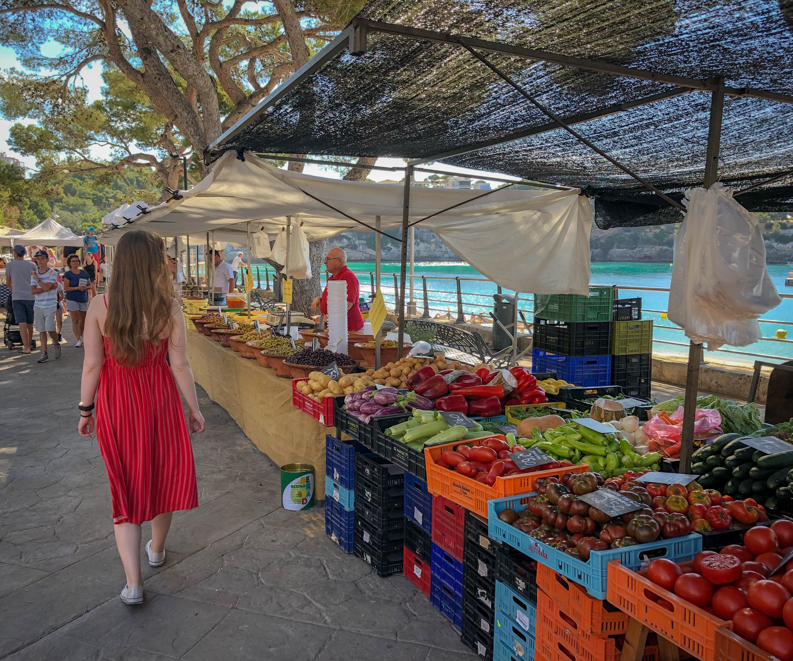

Welcome!
Grower’s Outlet was established in 1977 and for over 40 years, Ken Brendler and his family strive to provide the finest produce from local farms as well as produce from around the world.
While we have fruits and vegetables, we also provide a variety of pastas, dried beans, jams, nuts, granola, grains, trail mixes, and honey.
Besides those goods, we stock artisan items suchas breads, pastries, and syrups from local businesses around the Oregon and Washington area. If you’re looking for syrups, popcorn, fresh baked bread and pastries, we got it!
